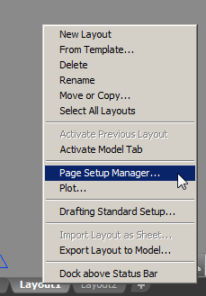
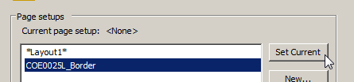
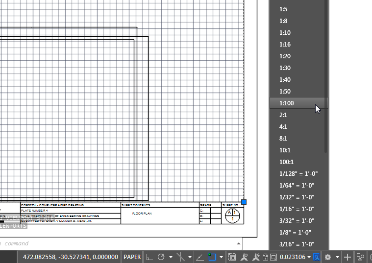

Create/open a new file, and right click a Layout tab, and select Page Setup... Make sure the layout is empty first.

Click import, download this file and open it in import, enter, OK, and set it as current:

Exit to the layout view, go here, select all, copy, and paste it into the command box (shown below)

It should've done the border already. (OPTIONAL, if model is not fit) Select the upper edge of the inner rectangle to select the viewport, and set the scale to 1:100 as below:

All is done, just edit the text.